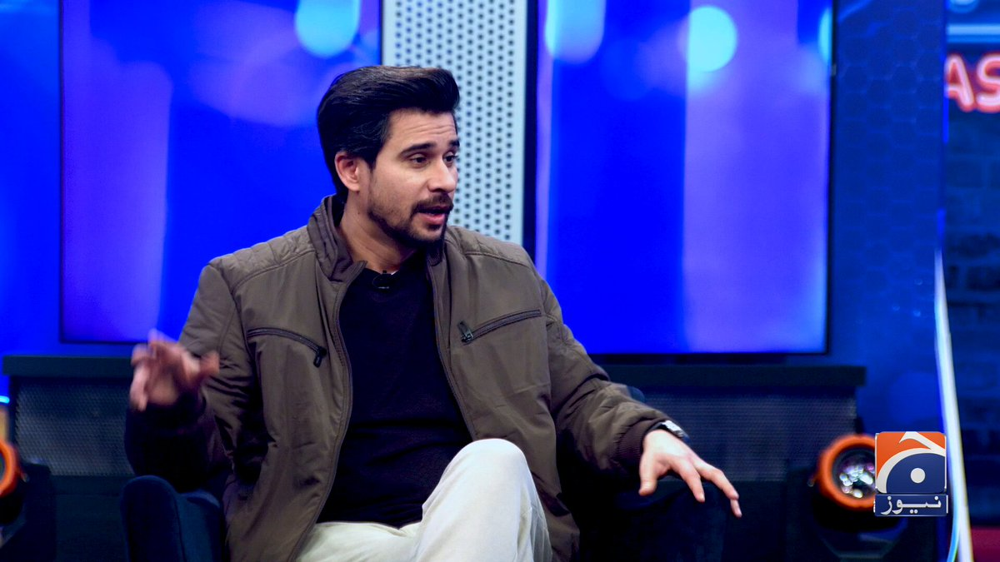

@geonews_urdu
📝 原文: 3 AM Headlines - August 3, 2026
🇨🇳 译文: 凌晨 3 点头条新闻 - 2026 年 8 月 3 日

🕒 2026-08-02T22:51:14+00:00
| 来源 | 旧窗口内数量 | 本次新增 | 本次淘汰 | 当前窗口内共有 |
|---|---|---|---|---|
| 推文 + Dawn 新闻 | 0 | 45 | 0 | 45 |
| ARY News | 0 | 0 | 0 | 0 |
注：淘汰数 = 旧窗口内数量 + 本次新增 - 当前窗口内共有


